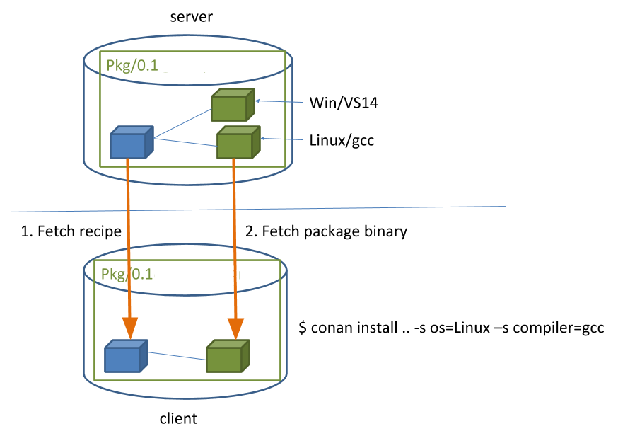

Getting Started
Let’s get started with an example: We are going to create an MD5 hash calculator app that uses one of the most popular C++ libraries: Poco.
We’ll use CMake as build system in this case but keep in mind that Conan works with any build system and is not limited to using CMake.
Make sure you are running the latest Conan version. Read the Conan update section to get more information.
An MD5 hash calculator using the Poco Libraries
Note
The source files to recreate this project are available in the example repository in GitHub. You can skip the manual creation of the folder and sources with this command:
$ git clone https://github.com/conan-io/examples.git && cd examples/libraries/poco/md5
Create the following source file inside a folder. This will be the source file of our application:
md5.cpp#include "Poco/MD5Engine.h" #include "Poco/DigestStream.h" #include <iostream> int main(int argc, char** argv){ Poco::MD5Engine md5; Poco::DigestOutputStream ds(md5); ds << "abcdefghijklmnopqrstuvwxyz"; ds.close(); std::cout << Poco::DigestEngine::digestToHex(md5.digest()) << std::endl; return 0; }
We know that our application relies on the Poco libraries. Let’s look for it in the ConanCenter remote, going to https://conan.io/center, and typing “poco” in the search box. We will see that there are some different versions available:
poco/1.8.1 poco/1.9.3 poco/1.9.4 ...
Note
The Conan client contains a command to search in remote repositories, and we could try $ conan search poco --remote=conancenter. You can perfectly use this command to search in your own repositories, but note that at the moment this might timeout in ConanCenter. The infrastructure is being improved to support this command too, but meanwhile using the ConanCenter UI is recommended.
We got some interesting references for Poco. Let’s inspect the metadata of the 1.9.4 version:
$ conan inspect poco/1.9.4 name: poco version: 1.9.4 url: https://github.com/conan-io/conan-center-index homepage: https://pocoproject.org license: BSL-1.0 author: None description: Modern, powerful open source C++ class libraries for building network- and internet-based applications that run on desktop, server, mobile and embedded systems. topics: ('conan', 'poco', 'building', 'networking', 'server', 'mobile', 'embedded') generators: cmake exports: None exports_sources: CMakeLists.txt short_paths: False apply_env: True build_policy: None revision_mode: hash settings: ('os', 'arch', 'compiler', 'build_type') options: cxx_14: [True, False] enable_apacheconnector: [True, False] enable_cppparser: [True, False] enable_crypto: [True, False] [...] default_options: cxx_14: False enable_apacheconnector: False enable_cppparser: False enable_crypto: True [...]
Let’s use this
poco/1.9.4version for our MD5 calculator app, creating a conanfile.txt inside our project’s folder with the following content:conanfile.txt[requires] poco/1.9.4 [generators] cmake
In this example we are using CMake to build the project, which is why the
cmakegenerator is specified. This generator creates a conanbuildinfo.cmake file that defines CMake variables including paths and library names that can be used in our build. Read more about Generators.Next step: We are going to install the required dependencies and generate the information for the build system:
Important
If you are using GCC compiler >= 5.1, Conan will set the
compiler.libcxxto the old ABI for backwards compatibility. In the context of this getting started example, this is a bad choice though: Recent gcc versions will compile the example by default with the new ABI and linking will fail without further customization of your cmake configuration. You can avoid this with the following commands:$ conan profile new default --detect # Generates default profile detecting GCC and sets old ABI $ conan profile update settings.compiler.libcxx=libstdc++11 default # Sets libcxx to C++11 ABI
You will find more information in How to manage the GCC >= 5 ABI.
$ mkdir build && cd build $ conan install .. ... Requirements bzip2/1.0.8 from 'conancenter' - Downloaded expat/2.2.9 from 'conancenter' - Downloaded openssl/1.1.1g from 'conancenter' - Downloaded pcre/8.41 from 'conancenter' - Downloaded poco/1.9.4 from 'conancenter' - Cache sqlite3/3.31.1 from 'conancenter' - Downloaded zlib/1.2.11 from 'conancenter' - Downloaded Packages bzip2/1.0.8:5be2b7a2110ec8acdbf9a1cea9de5d60747edb34 - Download expat/2.2.9:6cc50b139b9c3d27b3e9042d5f5372d327b3a9f7 - Download openssl/1.1.1g:6cc50b139b9c3d27b3e9042d5f5372d327b3a9f7 - Download pcre/8.41:20fc3dfce989c458ac2372442673140ea8028c06 - Download poco/1.9.4:73e83a21ea6817fa9ef0f7d1a86ea923190b0205 - Download sqlite3/3.31.1:4559c5d4f09161e1edf374b033b1d6464826db16 - Download zlib/1.2.11:6cc50b139b9c3d27b3e9042d5f5372d327b3a9f7 - Download zlib/1.2.11: Retrieving package f74366f76f700cc6e991285892ad7a23c30e6d47 from remote 'conancenter' Downloading conanmanifest.txt completed [0.25k] Downloading conaninfo.txt completed [0.44k] Downloading conan_package.tgz completed [83.15k] Decompressing conan_package.tgz completed [0.00k] zlib/1.2.11: Package installed f74366f76f700cc6e991285892ad7a23c30e6d47 zlib/1.2.11: Downloaded package revision 0 ... poco/1.9.4: Retrieving package 645aaff0a79e6036c77803601e44677556109dd9 from remote 'conancenter' Downloading conanmanifest.txt completed [48.75k] Downloading conaninfo.txt completed [2.44k] Downloading conan_package.tgz completed [5128.39k] Decompressing conan_package.tgz completed [0.00k] poco/1.9.4: Package installed 645aaff0a79e6036c77803601e44677556109dd9 poco/1.9.4: Downloaded package revision 0 conanfile.txt: Generator cmake created conanbuildinfo.cmake conanfile.txt: Generator txt created conanbuildinfo.txt conanfile.txt: Generated conaninfo.txt conanfile.txt: Generated graphinfo
Conan installed our Poco dependency but also the transitive dependencies for it: OpenSSL, zlib, sqlite and others. It has also generated a conanbuildinfo.cmake file for our build system.
Warning
There are prebuilt binaries for several mainstream compilers and versions available in Conan Center repository, such as Visual Studio 14, 15, Linux GCC 4.9 and Apple Clang 3.5. Up to >130 different binaries for different configurations can be available in ConanCenter. But if your current configuration is not pre-built in ConanCenter, Conan will raise a “BinaryMissing” error. Please read carefully the error messages. You can build the binary package from sources using conan install .. --build=missing, it will succeed if your configuration is supported by the recipe (it is possible that some ConanCenter recipes fail to build for some platforms). You will find more info in the Building with other configurations section.
Now let’s create our build file. To inject the Conan information, include the generated conanbuildinfo.cmake file like this:
CMakeLists.txtcmake_minimum_required(VERSION 2.8.12) project(MD5Encrypter) add_definitions("-std=c++11") include(${CMAKE_BINARY_DIR}/conanbuildinfo.cmake) conan_basic_setup() add_executable(md5 md5.cpp) target_link_libraries(md5 ${CONAN_LIBS})
Note
There are other integrations with CMake, like the
cmake_find_packagegenerators, that will use thefind_package()CMake syntax (see CMake section).Now we are ready to build and run our MD5 app:
(win) $ cmake .. -G "Visual Studio 16" $ cmake --build . --config Release (linux, mac) $ cmake .. -G "Unix Makefiles" -DCMAKE_BUILD_TYPE=Release $ cmake --build . ... [100%] Built target md5 $ ./bin/md5 c3fcd3d76192e4007dfb496cca67e13b
Installing Dependencies
The conan install command downloads the binary package required for your configuration (detected the first time you ran the command), together with other (transitively required by Poco) libraries, like OpenSSL and Zlib. It will also create the conanbuildinfo.cmake file in the current directory, in which you can see the CMake variables, and a conaninfo.txt in which the settings, requirements and optional information is saved.
Note
Conan generates a default profile with your detected settings (OS, compiler, architecture…) and that configuration is printed at the top of every conan install command. However, it is strongly recommended to review it and adjust the settings to accurately describe your system as shown in the Building with other configurations section.
It is very important to understand the installation process. When the conan install command runs, settings specified on the command line or taken from the defaults in <userhome>/.conan/profiles/default file are applied.
{kind=link}
For example, the command conan install .. --settings os="Linux" --settings compiler="gcc", performs these steps:
Checks if the package recipe (for
poco/1.9.4package) exists in the local cache. If we are just starting, the cache is empty.Looks for the package recipe in the defined remotes. Conan comes with
conancenterremote as the default, but can be changed.If the recipe exists, the Conan client fetches and stores it in your local Conan cache.
With the package recipe and the input settings (Linux, GCC), Conan looks for the corresponding binary in the local cache.
As the binary is not found in the cache, Conan looks for it in the remote and fetches it.
Finally, it generates an appropriate file for the build system specified in the
[generators]section.
Inspecting Dependencies
The retrieved packages are installed to your local user cache (typically .conan/data), and can be reused from this location for other projects. This allows to clean your current project and continue working even without network connection. To search for packages in the local cache run:
$ conan search "*"
Existing package recipes:
openssl/1.0.2t
poco/1.9.4
zlib/1.2.11
...
To inspect the different binary packages of a reference run:
$ conan search poco/1.9.4@
Existing packages for recipe poco/1.9.4:
Package_ID: 645aaff0a79e6036c77803601e44677556109dd9
[options]
cxx_14: False
enable_apacheconnector: False
enable_cppparser: False
enable_crypto: True
enable_data: True
...
The @ symbol at the end of the package name is important to search for a specific package. If you
don’t add the @, Conan will interpret the argument as a pattern search and return all the
packages that match the poco/1.9.4 pattern and may have different user and channel.
To inspect all your current project’s dependencies use the conan info command by pointing it to the location of the conanfile.txt folder:
$ conan info ..
conanfile.txt
ID: db91af4811b080e02ebe5a626f1d256bb90d5223
BuildID: None
Requires:
poco/1.9.4
openssl/1.0.2t
ID: eb50d18a5a5d59bd0c332464a4c348ab65e353bf
BuildID: None
Context: host
Remote: conancenter=https://center.conan.io
URL: https://github.com/conan-io/conan-center-index
Homepage: https://github.com/openssl/openssl
License: OpenSSL
Description: A toolkit for the Transport Layer Security (TLS) and Secure Sockets Layer (SSL) protocols
Topics: conan, openssl, ssl, tls, encryption, security
Recipe: Cache
Binary: Cache
Binary remote: conancenter
Creation date: 2019-11-13 23:14:37
Required by:
poco/1.9.4
Requires:
zlib/1.2.11
poco/1.9.4
ID: 645aaff0a79e6036c77803601e44677556109dd9
BuildID: None
Context: host
Remote: conancenter=https://center.conan.io
URL: https://github.com/conan-io/conan-center-index
Homepage: https://pocoproject.org
License: BSL-1.0
Description: Modern, powerful open source C++ class libraries for building network- and internet-based applications that run on desktop, server, mobile and embedded systems.
Topics: conan, poco, building, networking, server, mobile, embedded
Recipe: Cache
Binary: Cache
Binary remote: conancenter
Creation date: 2020-01-07 17:29:24
Required by:
conanfile.txt
Requires:
openssl/1.0.2t
zlib/1.2.11
ID: f74366f76f700cc6e991285892ad7a23c30e6d47
BuildID: None
Context: host
Remote: conancenter=https://center.conan.io
URL: https://github.com/conan-io/conan-center-index
Homepage: https://zlib.net
License: Zlib
Description: A Massively Spiffy Yet Delicately Unobtrusive Compression Library (Also Free, Not to Mention Unencumbered by Patents)
Recipe: Cache
Binary: Cache
Binary remote: conancenter
Creation date: 2020-01-07 17:01:29
Required by:
openssl/1.0.2t
Or generate a graph of your dependencies using Dot or HTML formats:
$ conan info .. --graph=file.html
$ file.html # or open the file, double-click
{kind=link}
Searching Packages
The remote repository where packages are installed from is configured by default in Conan. It is called Conan Center (configured as conancenter remote).
If we search for something like open in ConanCenter we could find different packages like:
openal/1.18.2@bincrafters/stable
openal/1.19.1
opencv/2.4.13.5@conan/stable
opencv/3.4.3@conan/stable
opencv/4.1.1@conan/stable
openexr/2.3.0
openexr/2.3.0@conan/stable
openexr/2.4.0
openjpeg/2.3.0@bincrafters/stable
openjpeg/2.3.1
openjpeg/2.3.1@bincrafters/stable
openssl/1.0.2s
...
As you can see, some of the libraries end with a @ symbol followed by two strings separated by a
slash. These fields are the user and channel for the Conan package, and they are
useful if you want to make specific changes and disambiguate your modified recipe from the one in the
Conan Center or any other remote. These are legacy packages, and the ones without user
and channel are the ones strongly recommended to use from ConanCenter.
ConanCenter is the central public repository for Conan packages. You can contribute packages to it in the conan-center-index Github repository. If you want to store your own private packages, you can download the free Artifactory Community Edition (CE) directly from the Conan downloads page.
Building with other configurations
In this example, we have built our project using the default configuration detected by Conan. This configuration is known as the default profile.
A profile needs to be available prior to running commands such as conan install. When running the command, your settings are automatically detected (compiler, architecture…) and stored as the default profile. You can edit these settings ~/.conan/profiles/default or create new profiles with your desired configuration.
For example, if we have a profile with a 32-bit GCC configuration in a file called gcc_x86, we can run the following:
$ conan install .. --profile=gcc_x86
Tip
We strongly recommend using Profiles and managing them with conan config install.
However, the user can always override the profile settings in the conan install command using the --settings parameter. As an exercise, try building the 32-bit version of the hash calculator project like this:
$ conan install .. --settings arch=x86
The above command installs a different package, using the --settings arch=x86 instead of the one of the default profile used previously. Note you might need to install extra compilers or toolchains in some platforms, as for example, Linux distributions no longer install 32bits toolchains by default.
To use the 32-bit binaries, you will also have to change your project build:
In Windows, change the CMake invocation to
Visual Studio 14.In Linux, you have to add the
-m32flag to yourCMakeLists.txtby runningSET(CMAKE_CXX_FLAGS "${CMAKE_CXX_FLAGS} -m32"), and the same applies toCMAKE_C_FLAGS, CMAKE_SHARED_LINK_FLAGS and CMAKE_EXE_LINKER_FLAGS. This can also be done more easily, by automatically using Conan, as we’ll show later.In macOS, you need to add the definition
-DCMAKE_OSX_ARCHITECTURES=i386.
Got any doubts? Check our FAQ, write us or join the community in Cpplang Slack #conan channel!